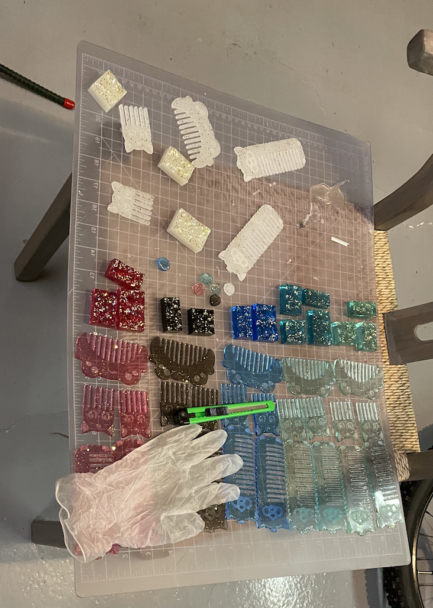

The first step of our design process was agreeing on our product, and we found a good compromise in the resin animal combs. We chose the resin animals combs because everyone agreed on it, it seemed fun, challenging, and like a product that we would want to buy! One challenge that we encountered, was the prices of the materials needed to buy, because we really wanted to do our animal combs, but resin is very expensive, and with a budget we had to do some research to find the cheapest, but still best quality resin. We ended up going with Exposy Resin. We enjoy making our resin combs, and hope you will enjoy using them!
